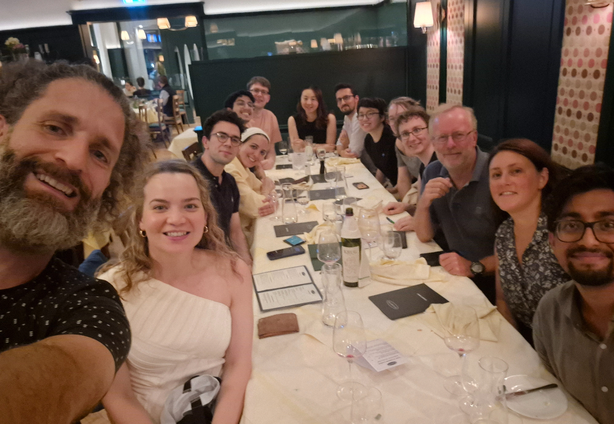

Research Team
Students, Mentees & Collaborators
The students I supervise and mentor across artificial intelligence, cognitive science, and linguistics, the theses and papers we've produced together, and the groups and collaborators I work with.
Supervision & Mentorship
Students & Mentees
Mentoring is the part of the job I take most seriously — and it produces real research. Several supervised projects have become papers at EMNLP, BlackboxNLP and NeurIPS workshops.
Project Supervision
Proposals, Theses & Supervised Reports
Project proposals for prospective MPhil students, together with materials from theses, UROP projects and research reports I have supervised or co-authored.
MPhil Project Proposals 2025–26
- Proposed MPhil (Advanced Computer Science / MLMI) project topics in small language models, multilinguality and interpretability.
Supervised Projects & Reports
- Selected reports and write-ups from MPhil theses, UROP projects and research projects I have supervised or co-authored.
Collaborators
Groups & Collaborators
I am very grateful to a number of academics, researchers and PhD students whom I am currently working with and/or previously worked with.

The Cambridge PicoLM Team
Cambridge NLIP Group
ALTA Institute (Computer Science & Technology)
XFACT (KAIST AI) & NAVER Cloud
Cambridge Theoretical & Applied Linguistics (TAL)
Cambridge Language Technology Lab (LTL)
Individual Collaborators

Acknowledgements
Acknowledgements
Papers I have been acknowledged in: